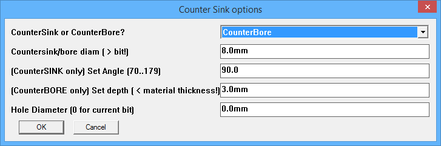
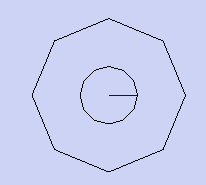

Phlatboyz Command Toolbar
|
|
|
This toolbar is your primary interface to SketchUcam.
It enables you to access the common parameters that govern the generation of cut lines and G-code,
all the cut line tools, and of course this help collection. Use the quicklinks at right to jump to specific topics. |
|
|

Enter Phlatboyz Parameters to set:
All g-code output uses the safe cutting
area's local origin(the bottom left corner) or the origin set by the offset tool
and only
edges entirely within the safe cutting area will generate g-code. You can also SELECT cut lines within the safe area and only those selected edges will cut. This will allow designs requiring multiple sheets to be contained within one SketchUp file and the cut codes processed as one sheet at a time for separate g-code files for each sheet. The safe area is defaults to Sketchup's origin, unless placed elsewhere using the Safe Area Tool. Also, there are check boxes for additional options:
Note: When you press "OK", these settings will be saved as attributes to your sketchup model. So each sketchup file will retain their individual settings. Profiles
Note the material thickness is deliberately not saved. The concept of the profile is to save a tool setup for a specific type of material rather than a size of material.
The 'Delete' button will allow you to select a profile and delete it. For those using the compatibility menu (on Mac or Linux) the profile functions are available on the Tools|Phlatboyz menu.
See also: Tool Change Some points to note:
|
||
|
|
Outside Cut Tool - This tool is used to cut the outside contour
of your part. It is assigned to a closed loop of edges and requires a corresponding face.
The cut path is offset to the outside, to compensate for the material removed by the cutter.
The thin face between the original line and the Outside Cut line will get a transparent texture.
It differs from the inside cut tool in that the path cut direction, will be clockwise.
If the preview shows the outside cut on the wrong side, reverse the face, outside cut must only be used on the outside of a polygon Use the ["End" key] if the tool locks onto the wrong adjacent face. You won't need this feature, if you hover over faces instead of edges. Note: Reversing the face (Edit/Face/Reverse Faces) prior to using the Outside Cut Tool will cause the cut direction to be reversed. This works the same as the Inside Cut Tool. This may have unintended side effects on arcs! |
||
|
|
Inside Cut Tool - This tool is used to cut out openings.
It is assigned to a closed loop of edges and requires a corresponding face.
The cut path is offset to the inside, to compensate for the material removed by the cutter.
The face will change to a transparent texture to resemble a hole.
It differs from the outside cut tool in that the path cut direction, will be counter-clockwise. If the preview shows the inside cut on the wrong side, reverse the face. Use the ["End" key] if the tool locks onto the wrong adjacent face. You won't need this feature, if you hover over faces instead of edges. Note: Reversing the face (Edit/Face/Reverse Faces) prior to using the Inside Cut Tool will cause the cut direction to be reversed. In milling, the rotation of the bit, counter clockwise or clockwise, determines which edge of the design will be left rough. Normally, in SketchUp, you would leave the default grey side facing up for all faces, before you assign cut lines. Otherwise, if the face is reversed (white), and a cut line is assigned whether inside or outside, the rough edge will be on the part and not the waste. So, in short, make sure that the grey side is facing up and SketchUcam will cut your part file in the right direction leaving a nice clean edge on the part. |
||
|
|
Tab Tool -
This tool is used to place tabs along any inside or outside cut Phlatboyz edge.
The tabs hold the parts in place while the media (foam sheet, balsa, cardboard, etc.) moves back and forth in the machine.
This tool uses the tab width and tab depth factors which are defined in the Parameters dialog. Use that dialog to define the tab tool parameters prior to using the tool; changing the values in the Parameters dialog will not affect tabs that have already been placed. Use the ["End" key], to toggle from standard Tabs to V-Tabs. V describes the angled tabs vs the standard rectangular tabs. The cursor will change from a T to V to show the current mode. Use the ["Home" key], to toggle Bold Tab viewing mode off/on. When the tab tool is active, this feature makes the tabs easy to see. Turn it off, if sketchup slows down when using the tab tool. Note: A feature of the Tab Tool is the ability to 'draw' tabs to any width you desire always starting with the default width. For example, if the tabs placed along a curve are too small, you can hold the left mouse button down and draw then in wider. The tab depth will remain the same as defined in the parameters dialogue. Note: The tab tool has click/drag functionality, for multiple tabs or extending tab width. |
||
|
|
Fold Tool -
This tool is used to define a fold line. The use of a fold line is
to create a crease, so a sheet of foam can be folded or bent to form 3d shapes. Or by using
a series of stepped depth fold lines, create a hinge line for a model airplane control surface.
It automatically selects a single edge. Press the ["Shift" key], if you want all connected edges. Use the ["End" key] to toggle between short and wide mode. When hovering over an edge, the short mode shows a pink color preview. Wide mode shows a darker red/purple preview color. Short and Wide mode status is also shown on the bottom status text. The default short mode will shorten both ends of the edge by a small amount. The main reason is to break contact and stop the possible creation of an extra face and loop, which could confuse SketchUcam. Wide mode will act normally and not offer this protection. But you can use wide mode, if say you want a connected chain of edges. Use the ["Left Arrow"]["Right Arrow"] keys to scroll through the preset depths: [25%, 50%, 75% & 100%]. This will result in the cut depth, as a percentage of the material thickness. You can see the current depth factor in the VCB (lower right hand corner in SketchUp). Use the ["Down" key] to set the depth back to the default of 50%. Note: You can type custom depth values into the VCB, using your keyboard. The value is not accepted, until the "Enter" key is pressed. Then the % suffix will appear with the VCB value, which indicates the value is now set. Max value allowed is 140%. |
||
|
|
Plunge Tool -
This tool is used to create a plunge point at any given cursor position. The use of the plunge tool is to drill holes.
The plunge tool creates a circle with a brown radius line extending from the center to the outside diameter. The diameter of the circle is determined by the Phlatboyz "Bit Diameter" parameter. The plunge tool allows the generation of G-code required to plunge the bit at the depth indicated in the "Material Thickness" Parameters dialog. OR You can set the percentage depth before you click. This hole will then be that percentage of the material thickness in depth. You will need to set the depth for every hole. AND You can hold down the SHIFT key when clicking, and you will be prompted for a diameter. The hole will then be spiral bored to that diameter. This is a relatively slow way to cut a hole so holes that are greater than 3 times the diameter of the bit should rather be a circle with an inside cut to remove the waste. However, if you are cutting soft material (large or no multipass) and using the 'diameter first' cut strategy, the cut will be quite quick.
Feedrate in the helix will be the normal rate set for cuts.
New in V1.2a : Plunge holes are automatically grouped. This (mostly) prevents underlying geometry from interfering with G-code generation. Do many holes with large diameterNew in V1.4 is the ability to lock the large diameter setting so that you can easily create many holes with the same large diameter.
Holes in a grid patternHold down ALT or CTRL key to be prompted for a grid pattern of holes to drill. They will all use the same
parameters. Note that the Horiz and Vert Count refer to the number of holes. If you need to space a
number of holes, say 7, along a length (say 52mm), then the spacing is calculated by If either Horiz or Vert count are '1' then you get only 1 row or column of holes.
|
||
 CounterSink/CounterBore hole Tool - (V1.4)
This tool is used to create a plunge point WITH a CounterSINK or CounterBORE at any given cursor position.
CounterSink/CounterBore hole Tool - (V1.4)
This tool is used to create a plunge point WITH a CounterSINK or CounterBORE at any given cursor position.
The example pictured at right was created using a 9mm straight flute bit. The hole is 12mm diameter, 15mm deep, and the countersink is 25mm diameter. The wood is unknown and resulted in fluffy edges, so what you see has been cleaned up by a few swipes with sandpaper.

When you click the icon to select this tool, you will see a dialog box as pictured at right. The Countersink tool
The Countersink tool creates a grouped symbol of 2 circles with a blue radius line extending from the center to the outside diameter of the inner circle. The step down for the countersink portion is 0.25mm per layer, with the decrease in radius being calculated from the angle selected in the dialog. Common angles are 82 and 90 degrees, with 100 or 120 degrees being used in thin sheet metal applications. Use the one that matches your screws! Angle is limited to >= 70 and < 180 degrees.
The CounterBORE toolBy selecting CounterBore from the first drop down list the tool will create counterbore operations, making a symbol as shown at right, showing the center hole diameter as for the countersink tool, and the outer diameter shown as a 9 sided figure in green. The radius indicator line will be green.The angle setting is ignored, and the 'Set Depth' setting is used for the depth of the counterbore. This is set using the current model units. Optionally set the 'Hole Diameter' to have a full depth hole that is bigger than the bit diameter. Set to 0 to have a plain bit diameter hole.
The hole depth is ALWAYS 'overcut%' deep, you cannot specify a shallower depth. This is because the countersink/bore portion has to have a central hole of at least bit_diameter to start from that is guaranteed to be deeper than the bottom end of the countersink or counterbore depth. You can hold down the SHIFT key when clicking, and you will be prompted for a diameter. The hole will then be spiral bored to that diameter before the countersink/bore is created. Hold down ALT or CTRL key to be prompted for a grid pattern of holes to drill. They will all use the same parameters. Feedrate will be the normal rate set for cuts.Downfeed will be limited to either (and will use fuzzy calculation)
|
|||
|
|
Center line Tool -
This tool is used to define a center line cut on a SketchUp edge.
The common use of center lines, is to cut a shallow graphical design or slot.
If you are able to draw the necessary pattern of lines to form a pocket, you can also use center lines to cut out the pocket.
Pocket milling is when you cut out shallow openings, that doesn't penetrate to the other side.
It automatically selects all connected edges. Press the ["Shift" key], if you only want a single edge. Use the ["Left Arrow"]["Right Arrow"] keys to scroll through the preset depths: [25%, 50%, 75% & 100%]. This will result in the cut depth, as a percentage of the material thickness. You can see the current depth factor in the VCB (lower right hand corner in SketchUp). Use the ["Down" key] to set the depth back to the default of 50%. Note: You can type custom depth values into the VCB, using your keyboard. The value is not accepted, until the "Enter" key is pressed. Then the % suffix will appear with the VCB value, which indicates the value is now set. Max value allowed is 140%. |
||
|
|
Pocket Tool - This tool is used to create a pocket inside a shape.
A pocket is a shallow depression in the surface of the part. While this tool will automatically deal with simple shapes, some shapes will produce incorrect results. These can be fixed manually or can be drawn using the keyboard options as follows:
Note: You can type custom depth values into the VCB, using your keyboard. The value is not accepted, until the "Enter" key is pressed. Then the % suffix will appear with the VCB value, which indicates the value is now set. Max value allowed is 99%. Fuzzy stepover (new in V1.3a) Using the exact stepover may result in a gap at the end of the zigzag that is much larger than the stepover%, causing the final outline cut to remove a chunk of material that is near to bit diameter. This could break the bit in harder materials. The option 'Use fuzzy pockets' defaults to ON since this results in a safer, optimal, zigzag spacing. You can change this setting on the Tools|Phlatboyz|Options|Features menu The stepover is recalculated such that there is no remainder at the end of the zigzag, making the final cut the same width as the first cut. (This may vary for complex shapes, use a smaller stepover for complex shapes, and change zigzag direction to find the best fill). The stepover is calculated as a SMALLER value if stepover% is less than 50%. It is calculated as a larger value if stepover% is LARGER than 50%. if stepover% is exactly 50% is uses that value. According to tool manufacturers using a 50% tool stepover will significantly shorten tool life so you should never use this anyway. The offset from the bounding rectangle to the zigzag edges is calculated from the stepover% as follows: stepover% < 75% offset = stepover% / 2 stepover% < 85% offset = stepover% / 3 stepover% <= 100% offset = stepover% / 4 This means that the offset is adjusted smaller as the stepover increases. This is done to prevent leaving large wedges for the final cut to handle, this happens especially on curved or sloped edges. MultiSelect pocketing (new in v1.4)
|
||
|
|
Eraser Tool - With this tool you can erase any Phlatboyz Edge.
Default is to erase all types of Phlatedges. This is the cursor that has no letters next to it. Use the ["Left Arrow"]["Right Arrow"] keys, if you want to erase only one type of edge. It will cycle through and show in the VCB(lower right hand corner of SketchUp) which line type is currently assigned to the eraser. Also, each type has it's own unique cursor. Use the ["Down" key] to quickly go back to the default "erase All types". Tab highlighting has been added to the eraser tool: Use the ["Home" key], to toggle Bold Tab viewing mode off/on. When the eraser tool is active, this feature makes the tabs easy to see. Turn it off, if sketchup slows down when using the eraser tool. Note: The right click context menu will also allow you to erase ALL selected Phlatboyz edges. Tip: Instead of deleting one item at a time, select many or all. Activate the eraser tool. And click the selected items. If any unwanted Phlatboyz edges still remain, then repeat. |
||
|
|
Safe Area Tool - Use this to graphically define the safe cutting area
for your parts. This tool uses the safe width and height defined in the
parameters dialog and allows dynamic placement of the "safe" cutting
area rectangle. G-code output will be generated only from designated Phlatboyz edges within this safe rectangle and will be relative to the safe origin (bottom left corner) unless moved using the 'Set 0,0 offset' tool. If any cut edges are selected within the Safe Area, only those selected edges will generate Gcode. Use this when generating Gcode for large complicated drawings where a lot of lines are outside the Safe Area. By selecting the items within the Safe Area that you want cut, SketchUcam can ignore all other lines and therefore generate Gcode much faster. Note: Even if the user doesn't use this tool to graphically define a safe area, the safe cutting area still exists and assumed to be at sketchup's origin unless it is moved using the default settings in the Options|Machine Options dialog. |
||
|
|
Reorder Groups Tool - Reorder groups to change cut order
Grouped cuts will be cut first, in the order they were grouped. However, in order to
edit a group it has to be exploded. Grouping it again affects the cut order. |
||
|
Set 0,0 offset -
Use this to set a X0,Y0 position for the Gcode that is somewhere other than the bottom left corner of the Safe Area. (However, it should still be within the Safe Area!)
|
|||
|
G-code Joiner -
You can use this tool to join several G-code files together so that they cut as one file.
This is useful when your drawing contains seperate cut areas that all cut the same part but in different stages.
Make sure that they all use the same size tool! More information here See also: Tool Change |
|||
|
|
Generate G-code - This tool is the last step in the SketchUcam process. Once
the parts are surrounded by safe cutting area and all cut lines and
tabs have been assigned, click on this icon to open a file save
dialogue box to save your g-code file to the location you specify. The SketchUcam will calculate the optimal cut order. Or you can choose your own cut order. You do this by grouping your parts and they will be cut in the same order. Note: The output g-code file has the extension .cnc but is simply a text file of X, Y, Z coordinates for the Phlatboyz machine to follow. Depending on your control software, this extension can be renamed to anything desired. To edit the g-code file, you can right click and open with a text editor of your choice. If you alter this file, your machine may do unexpected things, be very careful! |
||
|
|
Link to the Phlatboyz homepage. | ||
|
|
Opens this help file. Known to not display on Linux under WINE, search for file help.html under the Sketchup Plugins folder within ~/.wine. Installing IE8 using 'winetricks ie8' may solve this. |
 New in 1.1c is the ability to save and restore tool profiles.
This allows you to quickly restore a tool setup that relates to a type of material or operation.
For example one might store the settings for a drilling operation with multipass on, low feed speeds etc.
For a foam milling tool one can store high feed speeds, not multipass and so on.
New in 1.1c is the ability to save and restore tool profiles.
This allows you to quickly restore a tool setup that relates to a type of material or operation.
For example one might store the settings for a drilling operation with multipass on, low feed speeds etc.
For a foam milling tool one can store high feed speeds, not multipass and so on. Clicking the 'Save' button will produce a prompt for a profile name.
Profile names must not have spaces or punctuation in them.
The following settings will be saved
Clicking the 'Save' button will produce a prompt for a profile name.
Profile names must not have spaces or punctuation in them.
The following settings will be saved Clicking the 'Load' button will bring up a prompt box showing the currently available profiles.
Select one and click 'Ok'.
Clicking the 'Load' button will bring up a prompt box showing the currently available profiles.
Select one and click 'Ok'. Also on that menu us the Options Summary entry.
This will display your current settings for a number of global options settable in the
Also on that menu us the Options Summary entry.
This will display your current settings for a number of global options settable in the 


Thank you for your interest in the Phlatboyz project. Please take the time to visit the Phlatforum for lots of great people sharing great ideas and designs created with SketchUcam on their Phlatboyz machines!